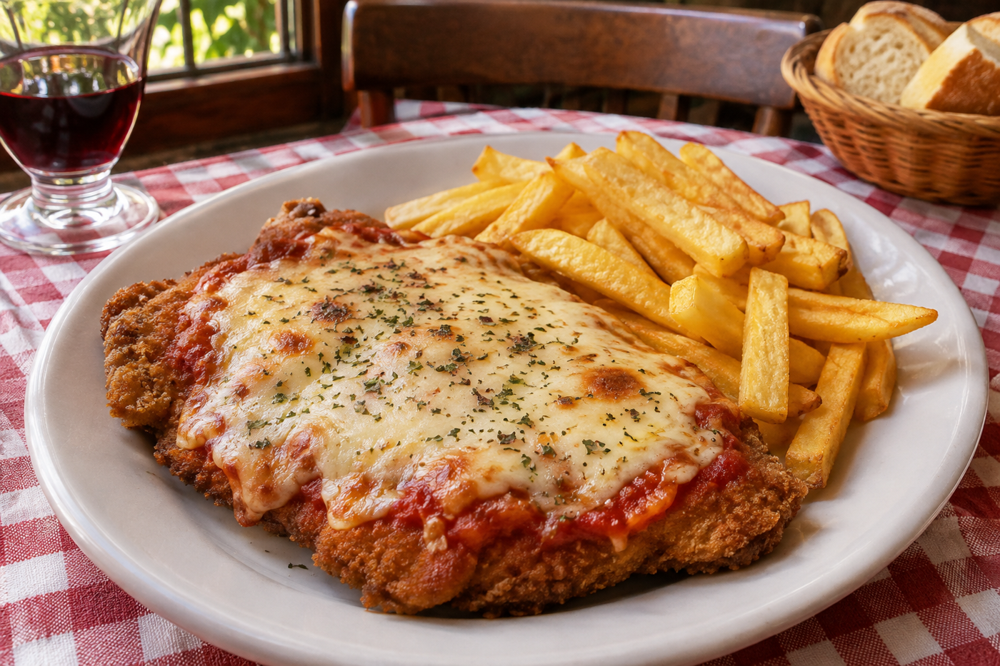

Pasá, estás en casa.Acá se cocina
Acá se cocina
con cariño.
Platos de siempre, porciones generosas
y ese gustito a comida de casa.
El pan va por cuenta de Mabel.

La felicidad viene
con papas fritas. ↗
con papas fritas. ↗
HECHO EN CASAcon amorY SIN APURO
Las mejores charlas empiezan después del postre.